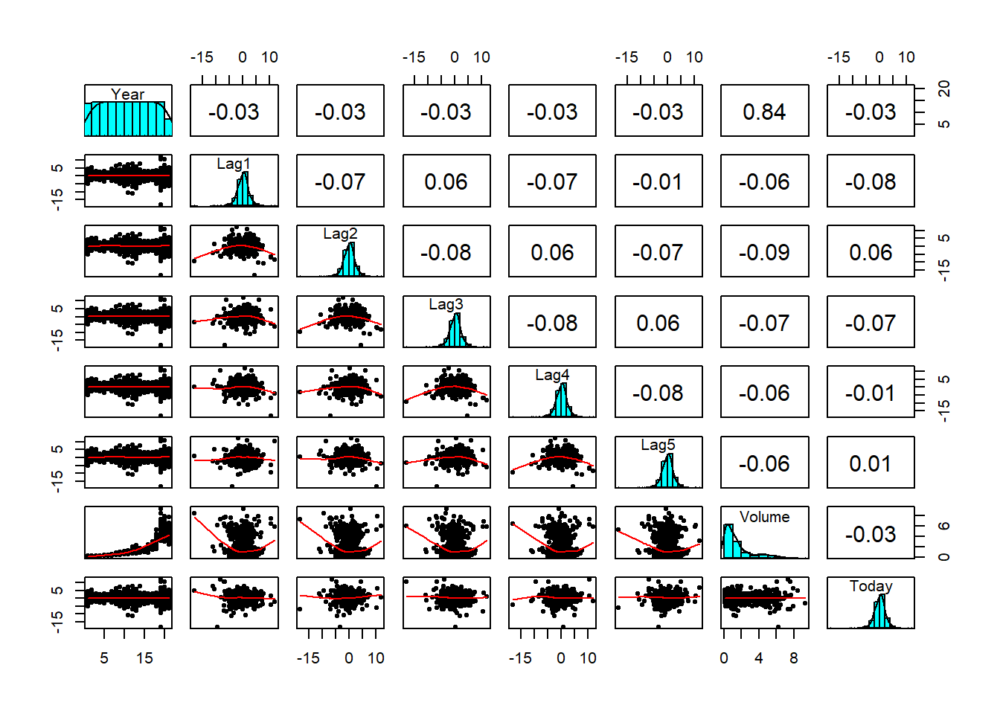
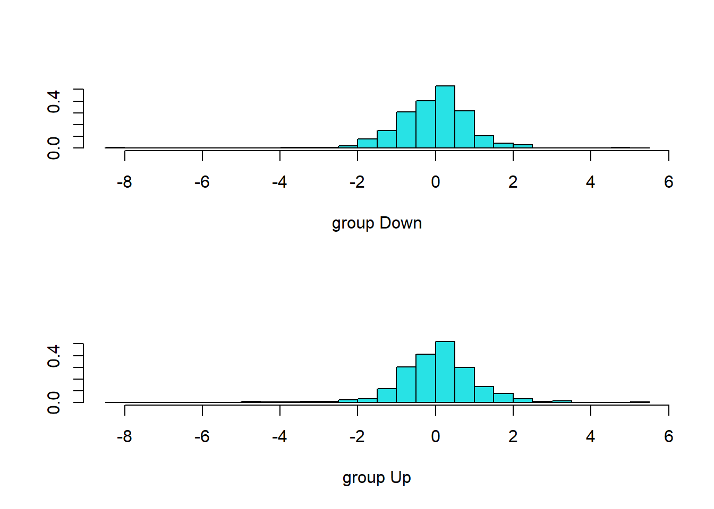

exp(-0.5) * 0.8 / (exp(-0.5) * 0.8 + exp(-2/9) * 0.2)[1] 0.7518525November 14, 2024
The logistic function is define as
\[ p(X) = \frac{e^{\beta_o + \beta_1X}}{1\;+ e^{\beta_o + \beta_1X}}\\ \tag{1}\]
Rearranging terms, \[p(X) = \frac{e^{(β₀ + β₁X)}} {1 + e^{(β₀ + β₁X)}}\] Let \(L = e^{(β₀ + β₁X)}\). Then \(p(X) = \frac{L}{1 + L}\).
\[\begin{gather*} p(X) \cdot{} (1 + L) = L\\ p(X) + p(X) \cdot{} L = L\\ p(X) = L - p(X) \cdot{} L\\ p(X) = L \cdot{} (1 - p(X))\\ \frac{p(X)}{(1 - p(X)} = L\\ \end{gather*}\]
Substituting \(L\) back gives the logit representation:
\[ \frac{p(X)}{1 - p(X)} = e^{\beta_o + \beta_1X} \tag{2}\]
\[ p_k(x) = \frac{\pi_k\frac{1}{\sqrt{2\pi\sigma}} \cdot \exp(-\frac{1}{2\sigma^2}(x - \mu_k)^2)} {\sum_{l=1}^k \pi_l\frac{1}{\sqrt{2\pi\sigma}} \cdot \exp(-\frac{1}{2\sigma^2}(x - \mu_l)^2)} \tag{3}\]
The discriminant function is
\[ \delta_k(x) = x.\frac{\mu_k}{\sigma^2} - \frac{\mu_k^2}{2\sigma_2} + \log(\pi_k) \tag{4}\]
To show Equation 3 is equals to Equation 4, we first assume \(\sigma_1^2\;=\;...\;=\sigma_k^2\). Hence,
\[ p_k(x) = \frac{\pi_k \exp\left(-\frac{1}{2\sigma^2}(x - \mu_k)^2\right)} {\sum_{l=1}^k \pi_l \exp\left(-\frac{1}{2\sigma^2}(x - \mu_l)^2\right)} \]
Next, we take the \(\log(p_K(X))\) to linearized the function. \[ \log(p_k(x)) = \log(\frac{\pi_k \exp\left(-\frac{1}{2\sigma^2}(x - \mu_k)^2\right)}{\sum_{l=1}^k \pi_l \exp\left(-\frac{1}{2\sigma^2}(x - \mu_l)^2\right)}) \] Rearranging terms
\[ \log(p_k(x)) = \log(\pi_k) - \frac{1}{2\sigma^2}(x - \mu_k)^2 - \log\left(\sum_{l=1}^k \pi_l \exp\left(-\frac{1}{2\sigma^2}(x - \mu_l)^2\right)\right) \]
To maximize over \(k\), any term that’s independent of \(k\) is ignored
\[\begin{align} f &= \log(\pi_k) - \frac{1}{2\sigma^2} (x^2 - 2x\mu_k + \mu_k^2) \\ &= \log(\pi_k) - \frac{x^2}{2\sigma^2} + \frac{x\mu_k}{\sigma^2} - \frac{\mu_k^2}{2\sigma^2} \\ \end{align}\]
Since \(\frac{x^2}{2\sigma^2}\) is also independent of \(k\), it is ignored in order to maximize over \(k\)
\[ \log(\pi_k) + \frac{x\mu_k}{\sigma^2} - \frac{\mu_k^2}{2\sigma^2} \]
Prove that in this case, the Bayes classifier is not linear. Argue that it is in fact quadratic.
To classify an observation, the Bayes classifier assigns it to the class \(k\) for which the posterior probability \(p_k(x)\) is largest. This is equivalent to assigning the observation to the class that maximizes the discriminant function, \(δ_k(x)\). For a one-dimensional QDA model, we do not assume the variances are equal across classes.
The discriminant function for class \(k\) is derived from the posterior probability: \[δ_k(x) = log(p_k(x)) = log(π_k \cdot{} f_k(x)) - log(C)\] where \(f_k(x)\) is the normal density \(N(μ_k, σ_k^2)\) and \(C\) is the denominator \(Σ P(Y=l)f_l(x)\), which doesn’t depend on \(k\). To maximize over \(k\), we can ignore \(C\).
Let’s expand the function: \[δ_k(x) ∝ log(π_k) + log(f_k(x))\] \[δ_k(x) = log(π_k) - log(√(2πσ_k^2)) - (\frac{1}{2σ_k^2}) \cdot{} (x - μ_k)^2\]
Expanding the squared term: \[δ_k(x) = log(π_k) - (\frac{1}{2})\;log\;(2πσ_k^2) - (\frac{1}{2σ_k^2}) \cdot{} (x^2 - 2xμ_k + μ_k^2)\]
Rearranging the terms to see the structure as a function of \(x\): \[δ_k(x) = - (\frac{1}{2σ_k^2})x^2 + (\frac{μ_k}{σ_k^2})x + [log(π_k) - (\frac{1}{2})log(2πσ_k^2) - (\frac{μ_k^2}{2σ_k^2})]\]
This discriminant function \(δ_k(x)\) is a quadratic function of \(x\). The coefficient of the \(x^2\) term is \(\frac{1}{2σ_k^2}\). Since QDA assumes that \(σ_k^2\) is different for each class \(k\), this quadratic term does not cancel out when comparing the discriminant functions of two different classes (i.e., when finding the decision boundary where \(δ_k(x) = δ_j(x))\).
Therefore, the resulting decision boundary is quadratic, and the Bayes classifier is not linear.
Since \(X\) is uniformly distributed on \([0,1]\), its range is \(1\). The prediction for a test observation \(X=0.6\) uses training observations in the range \([0.55, 0.65]\). The length of this interval is \(0.65 - 0.55 = 0.1\). Because the data is uniform, the fraction of observations that fall into an interval is equal to the length of that interval. Therefore, on average, we will use \(10\%\) of the available observations.
We are now in two dimensions, and we form a neighborhood by taking a \(10\%\) range for each feature. This creates a square (a 2-D hypercube) centered on the test point. The side length for this square is 0.1 for each dimension. Since the features are uniformly distributed on [0,1] x [0,1], the fraction of observations we use is the area of this square, which is \(0.1 \cdot{} 0.1 = 0.01\). So, on average, we will use only \(1%\) of the observations.
Following the pattern, for \(p=100\) dimensions, our neighborhood is a 100-dimensional hypercube where each side has length \(0.1\). The volume of this hypercube is \(0.1^{100}\). This is an infinitesimally small number, meaning we expect to use virtually zero fraction of the available observations.
The answers to parts (a)-(c) show that the fraction of training data available in a local neighborhood of a fixed size (\(10\%\) of the range of each feature) decreases exponentially as the number of dimensions p increases \((0.1^p)\). For a large \(p\), this fraction is so small that the neighborhood is effectively empty. This means there are no “nearby” neighbors to average for a prediction, which undermines the entire principle of KNN and other local methods. This is the curse of dimensionality.
Let \(l\) be the side length of the p-dimensional hypercube. The volume is \(l^p\). We want this volume to be \(0.1\) (to capture \(10\%\) of the uniform data). So, we solve \(l^p = 0.1\) for \(l\), which gives \(l = (0.1)^{(1/p)}\).
As the dimension \(p\) increases, the side length \(l\) of the hypercube needed to capture just \(10\%\) of the data rapidly approaches \(1\). For \(p=100\), each side of the “local” neighborhood must span over \(97\%\) of the total range of its corresponding feature. This means the points within this hypercube are no longer truly “local” or “near” the test observation. The method loses its local character, and the predictions are based on points that are far away, which leads to poor performance.
QDA been the more flexible model will perform better on the training set, but worse on the test set. On the test set, QDA will overfit the data because the true decision boundary is linear.
In this situation since the decision boundary is non-linear, QDA will perform better in both data sets. A linear model will underfit in this case.
As sample size increase, QDA will improve because there is more data to fit and the low bias will offset increase in variance.
False. In this case, QDA will overfit the data.
(a). Estimate the probability that a student who studies for 40h and has an undergrad GPA of 3.5 gets an A in the class.
\[ p(X) = \frac{e^{-6 + 0.05X_1 + X_2}}{1 + e^{-6 + 0.05X_1 + X_2}} \]
when \(X_1 = 40\) and \(X_2 = 3.5\), \(p(X) = 0.38\)
\[\begin{gather} \log\left(\frac{p(X)}{1-p(x)}\right) = -6 + 0.05X_1 + X_2 \\ \log\left(\frac{0.5}{1-0.5}\right) = -6 + 0.05X_1 + 3.5 \\ \end{gather}\]
Therefore, solving the equation \(0 = −6 + 0.05X_1 + 3.5\), \(X_1 = 50\) hours.
Hint: Recall that the density function for a normal random variable is \(f(x) =\frac{1}{\sqrt{2\pi\sigma^2}}e^{-(x-\mu)^2/2\sigma^2}\). You will need to use Bayes’ theorem.
Value of companies issuing a dividend (D) = \(D \sim \mathcal{N}(10, 36)\).
Value \(v\) for companies not issuing a dividend \((D^c)\) = \(D^c \sim \mathcal{N}(0, 36)\) and \(p(D) = 0.8\).
Bayes theorem:
\[\begin{align} P(D|X) &= \frac{P(D) \cdot{} P(X|D)}{P(D) \cdot{} P(X|D) + P(D^c) \cdot{} P(X|D^c)} \\ \end{align}\]
Substitute the Gaussian likelihoods into Bayes theorem
\[\begin{align} P(D|X) &= \frac{P(D) \cdot{} \frac{1}{\sqrt{2\pi\sigma^2}} e^{-(x-\mu_D)^2/2\sigma^2}} {P(D) \cdot{} \frac{1}{\sqrt{2\pi\sigma^2}} e^{-(x-\mu_D)^2/2\sigma^2} + P(D^c) \cdot{} \frac{1}{\sqrt{2\pi\sigma^2}} e^{-(x-\mu_{D^c})^2/2\sigma^2}} \\ \end{align}\]
Factor out \(\frac{1}{\sqrt{2\pi\sigma^2}}\) from the numerator and denominator, which cancels out:
\[\begin{align} P(D|X) &= \frac{P(D) \cdot{} e^{-(x-\mu_D)^2/2\sigma^2}} {P(D) \cdot{} e^{-(x-\mu_D)^2/2\sigma^2} + P(D^c) \cdot{} e^{-(x-\mu_{D^c})^2/2\sigma^2}} \\ \end{align}\]
Substitute the given probabilities and means:
\[\begin{align} P(D|X) &= \frac{0.8 \times e^{-(4-10)^2/(2 \times 36)}} {0.8 \times e^{-(4-10)^2/(2 \times 36)} + 0.2 \times e^{-(4-0)^2/(2 \times 36)}} \\ &= \frac{0.8 \cdot e^{-1/2}}{0.8 \cdot e^{-1/2} + 0.2 \cdot e^{-2/9}} \\ \end{align}\]
Logistic regression will perform better because it has a lower test error rate. For \(K = 1\), the training error rate is always zero because the closest point is always the training point itself, so the model will never make a mistake on the training set. Given that the average error rate for 1-NN is 18%, this implies a test error rate of 36%. Logistic regression, with a test error rate of 30%, is therefore the better choice.
\[ \frac{p(x)}{1 - P(x)} = odd\\ \] \[\begin{equation} p(x) = \frac{odd}{1 + odd}\\ \end{equation}\]
\[\begin{equation} p(x) = \frac{0.37}{1 + 0.37} = 0.27 \end{equation}\]
\[\frac{0.16}{1 - 0.16} = 0.19\]
The goal is to find the log-odds between class \(k\) and a baseline class \(K\) for an LDA model with \(p=1\). This is given by \(log(\frac{P(Y=k|X=x)}{P(Y=K|X=x)})\). This is equivalent to \(δ_k(x) - δ_K(x)\).
The discriminant function for LDA is: \[δ_k(x) = x \cdot{} (\frac{μ_k}{σ^2}) - (\frac{μ_k^2}{2σ^2}) + log(π_k)\]
The log-odds are: \[δ_k(x) - δ_K(x) = [x \cdot{} (\frac{μ_k}{σ^2}) - (\frac{μ_k^2}{2σ^2}) + log(π_k)] - [x \cdot{} (\frac{μ_K}{σ^2}) - (\frac{μ_K^2}{2σ^2}) + log(π_K)]\]
Now, group the terms that are constant and those that are coefficients of \(x\): \[= x \cdot{} (\frac{μ_k}{σ^2} - \frac{μ_K}{σ^2}) + [log(π_k) - log(π_K) - \frac{μ_k^2}{2σ^2} + \frac{μ_K^2}{2σ^2}]\]
This has the form \(a_k + b_{k1} \cdot{} x\). The coefficients are: \[a_k = log(\frac{π_k}{π_K}) - \frac{μ_k^2 - μ_K^2}{2σ^2}\] \[b_k1 = \frac{μ_k - μ_K}{σ^2}\] 11. Work out the detailed forms of \(a_k\), \(b_{kj}\), and \(b_{kjl}\) in (4.33). Your answer should involve \(πk\), \(μk\), \(Σk\). (Assuming (4.33) refers to the general quadratic form of the QDA discriminant function).
The QDA discriminant function is: \[δ_k(x) = -\frac{1}{2} \cdot{} log(det(Σ_k)) -\frac{1}{2} \cdot{} (x-μ_k)^T \cdot{} Σ_k^{-1} \cdot{} (x-μ_k) + log(π_k)\] Expanding the quadratic term \((x-μ_k)^T \cdot{} Σ_k^{-1} \cdot{} (x-μ_k)\): \[= x^TΣ_k^{-1}x - x^TΣ_k^{-1}μ_k - μ_k^TΣ_k^{-1}x + μ_k^TΣ_k^{-1}μ_k\] Since \(x^TΣ_k^{-1}μ_k\) is a scalar, it’s equal to its transpose \[μ_k^TΣ_k^{-1T}x = μ_k^TΣ_k^{-1}x\].
So the expression is \[x^TΣ_k^{-1}x - 2x^TΣ_k^{A-1}μ_k + μ_k^TΣ_k^{-1}μ_k\].
Substituting this back into \(δ_k(x)\): \[δ_k(x) = -\frac{1}{2} \cdot{} x^TΣ_k^{-1}x + x^TΣ_k^{-1}μ_k - \frac{1}{2} \cdot{} μ_k^TΣ_k^{-1}μ_k - \frac{1}{2} \cdot{} log(det(Σ_k)) + log(π_k)\] This is a quadratic function of \(x\). We can identify the constant, linear, and quadratic parts.
The constant term is \(a_k\): \[a_k = log(π_k) - \frac{1}{2} \cdot{} log(det(Σ_k)) - \frac{1}{2} \cdot{} μ_k^TΣ_k^{-1}μ_k\] The linear part is \(x^T(Σ_k^{-1}μ_k)\). The vector of coefficients for the linear terms is \(b_k = Σ_k^{-1}μ_k\). The coefficient for the j-th variable, \(x_j\), is: \(b_{kj} = (Σ_k^{-1}μ_k)_j\)
The quadratic part is \(-\frac{1}{2} \cdot{} x^TΣ_k^{-1}x\). The matrix of coefficients for the quadratic terms \(x_j \cdot{} x_l\) is \(-\frac{1}{2} \cdot{} Σ_k^{-1}\). The coefficient \(b_{kjl}\) is: \[b_{kjl} = (\frac{1}{2} \cdot Σ_k^{-1})_{jl}\]
apples and oranges. You fit a logistic regression model and find that\[ \hat{Pr}(Y=orange|X=x) = \frac{\exp(\hat\beta_0 + \hat\beta_1x)}{1 + \exp(\hat\beta_0 + \hat\beta_1x)} \]
Your friend fits a logistic regression model to the same data using the softmax formulation in (4.13), and finds that
\[ \hat{Pr}(Y=orange|X=x) = \frac{\exp(\hat\alpha_{orange0} + \hat\alpha_{orange1}x)} {\exp(\hat\alpha_{orange0} + \hat\alpha_{orange1}x) + \exp(\hat\alpha_{apple0} + \hat\alpha_{apple1}x)} \]
orange versus apple in your model?The log odds (\(\frac{p(x)}{1 - P(x)}\)) in my model will be \(\hat\beta_0 + \hat\beta_1x\)
orange versus apple in your friend’s model?Log odds of our friend model:
\[ (\hat\alpha_{orange0} - \hat\alpha_{apple0}) + (\hat\alpha_{orange1} - \hat\alpha_{apple1})x \]
The coefficient estimate in my friend’s model:
The coefficients in my model would be \(\hat\beta_0 = 1.2 - 3 = -1.8\) and \(\hat\beta_1 = -2 - 0.6 = -2.6\)
They should agree everytime (i.e, pridictions and log odd between any pair of classes will remain the same, regardless of coding). The cofficient will be different because of the choice of baseline.
Weekly data set, which is part of the ISLR2 package. This data is similar in nature to the Smarket data from this chapter’s lab, except that it contains 1,089 weekly returns for 21 years, from the beginning of 1990 to the end of 2010.Weekly data. Do there appear to be any patterns?'data.frame': 1089 obs. of 9 variables:
$ Year : num 1990 1990 1990 1990 1990 1990 1990 1990 1990 1990 ...
$ Lag1 : num 0.816 -0.27 -2.576 3.514 0.712 ...
$ Lag2 : num 1.572 0.816 -0.27 -2.576 3.514 ...
$ Lag3 : num -3.936 1.572 0.816 -0.27 -2.576 ...
$ Lag4 : num -0.229 -3.936 1.572 0.816 -0.27 ...
$ Lag5 : num -3.484 -0.229 -3.936 1.572 0.816 ...
$ Volume : num 0.155 0.149 0.16 0.162 0.154 ...
$ Today : num -0.27 -2.576 3.514 0.712 1.178 ...
$ Direction: Factor w/ 2 levels "Down","Up": 1 1 2 2 2 1 2 2 2 1 ...
Down Up
484 605 There is a strong positive correlation between the volume of shares traded and the year. From 2005 to 2010, the volume of shares began increasing exponentially. Additionally, between 1990 and 2010, the market had a total of 605 positive returns and 484 negative returns, respectively.
Direction as the response and the five lag variables plus Volume as predictors. Use the summary function to print the results. Do any of the predictors appear to be statistically significant? If so, which ones? Estimate Std. Error z value Pr(>|z|)
(Intercept) 0.26686414 0.08592961 3.1056134 0.001898848
Lag1 -0.04126894 0.02641026 -1.5626099 0.118144368
Lag2 0.05844168 0.02686499 2.1753839 0.029601361
Lag3 -0.01606114 0.02666299 -0.6023760 0.546923890
Lag4 -0.02779021 0.02646332 -1.0501409 0.293653342
Lag5 -0.01447206 0.02638478 -0.5485006 0.583348244
Volume -0.02274153 0.03689812 -0.6163330 0.537674762Among all the predictors, only Lag2 is statistically significant.
Direction
glm.pred Down Up
Down 54 48
Up 430 557[1] 0.4389348The 43.8% error rate is the training error. This is likely an optimistic estimate of how the model would perform on new, unseen data, as the model was evaluated on the same data it was trained on.
Lag2 as the only predictor. Compute the confusion matrix and the overall fraction of correct predictions for the held out data (that is, the data from 2009 and 2010). Estimate Std. Error z value Pr(>|z|)
(Intercept) 0.20325743 0.06428036 3.162046 0.00156665
Lag2 0.05809527 0.02870446 2.023911 0.04297934
glm.pred Down Up
Down 9 5
Up 34 56[1] 0.625[1] 0.375The model improved with
Lag2as the only the predictor. Test error rate is 37.5% which is better than random guessing.

[1] "class" "posterior" "x"
Down Up
Down 9 5
Up 34 56[1] 0.375
Down Up
Down 0 0
Up 43 61[1] 0.4134615train <- (Year < 2009)
train.Direction <- Weekly$Direction[train] # vector for the train class labels
test.Direction <- Weekly$Direction[!train]
# knn() is part of the 'Class' library
set.seed(1)
knn.pred <- knn(Weekly[train, "Lag2", drop = FALSE],
Weekly[!train, "Lag2", drop = FALSE],
train.Direction, k = 1)
table(knn.pred, test.Direction) test.Direction
knn.pred Down Up
Down 21 30
Up 22 31[1] 0.5
nb.pred Down Up
Down 0 0
Up 43 61[1] 0.4134615Logistic regression and linear discriminant analysis methods provide the best results on this data.
glm.pred Down Up
Down 8 5
Up 35 56Logistic error rate: 0.3846154
Down Up
Down 8 5
Up 35 56LDA error rate: 0.3846154
nb.pred Down Up
Down 7 10
Up 36 51Naive Bayes error rate: 0.4423077# KNN
# Calculate error rates for each k
error_rates <- sapply(1:100, function(k) {
train <- (Year < 2009)
set.seed(1)
knn.pred <- knn(Weekly[train, 2:4, drop = FALSE],
Weekly[!train, 2:4, drop = FALSE],
Weekly$Direction[train], k = k)
error_rate <- mean(knn.pred != test.Direction)
return(error_rate)
})
# Find the k with the minimum error rate
min_error_rate <- min(error_rates)
best_k <- which.min(error_rates)
table(knn.pred, Weekly$Direction[!train])
knn.pred Down Up
Down 21 30
Up 22 31The best k is: 26 with an error rate of: 0.3365385 After experimenting with several models and predictor combinations, the methods that provided the best results were logistic regression, LDA, and Naive Bayes using only
Lag2as a predictor. These models all achieved a test error rate of \(37.5\%\). The more complex models, including those with more predictors or the optimized KNN classifier, did not outperform this simpler baseline.